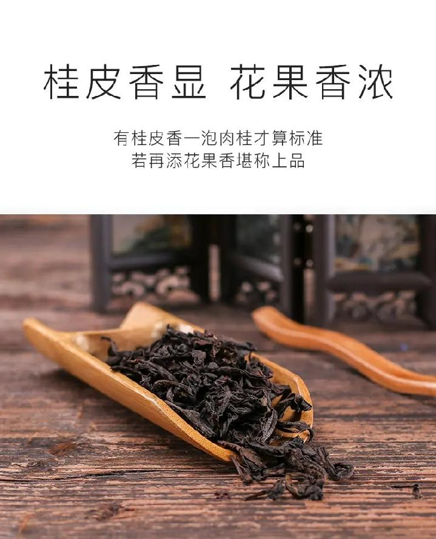

肉桂
树高者达１.６米，冠１米，干粗３厘米。枝条向上伸展略扩张。枝叶颇密，叶厚而脆呈浓绿色，叶片光滑，叶缘内翻成瓦筒状，叶尖较钝，椭圆形。叶脉细而隐。萌芽力强。花甚多，花朵小。成品茶外形紧结，色泽青褐鲜润。香极高锐，有明显的桂皮香味，佳者带乳香，有诱人之感，香气久泡尤存。味鲜滑甘润，汤色橙黄清澈，叶底黄亮，红点鲜明，但不很耐泡。肉桂又名玉桂，是武夷岩茶名丛之一。

武夷山市区、度假区各大超市及土特产专卖店均有销售。